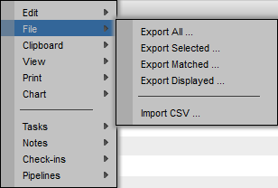
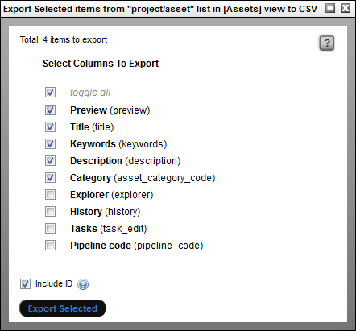
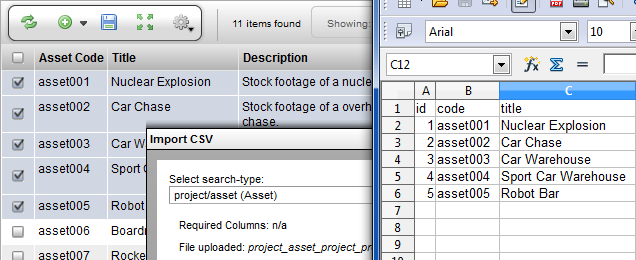
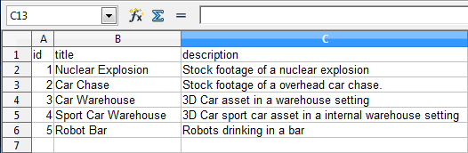
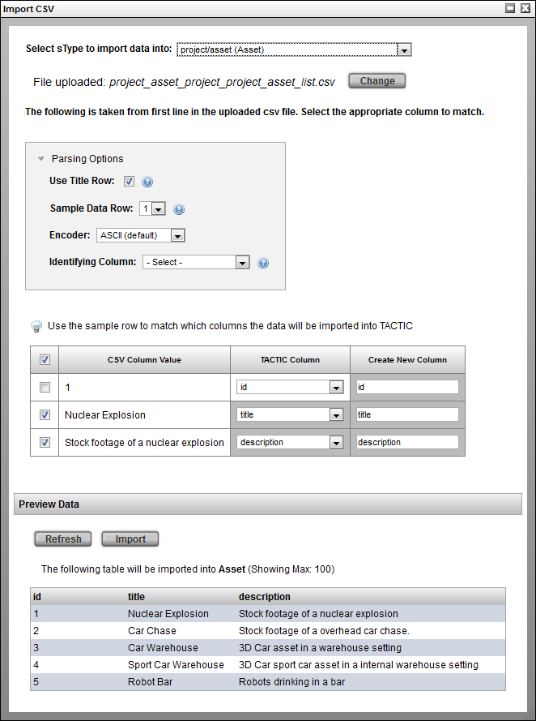
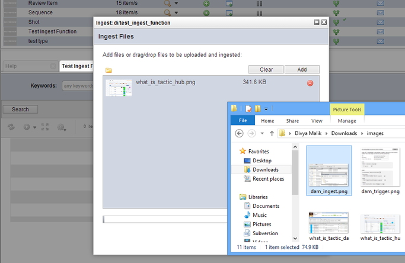
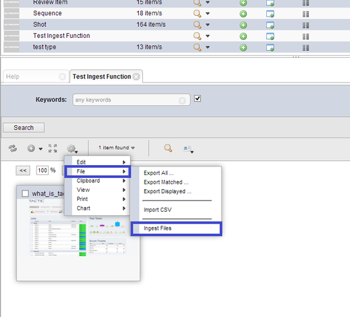
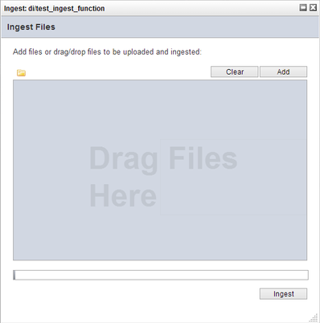

Description
TACTIC uses a database and thus naturally exports to table-based outputs. TACTIC includes a simple user interface to export any table-based view out to a CSV file (Comma Separated Values file). Data can also be edited and imported to update or create new items in TACTIC.
Exporting Data
To export data from a TACTIC view to a CSV file, first check mark the rows to export. Then, go to the gear menu and under File select one of the following options:

Other export options include
- Export All - All items in the database
- Export Selected - Only the selected items in the view.
- Export Matched - All items found by the search
- Export Displayed - All items in the current view.
Next, select the columns to export from the selection list and click the Export Selected button.

Note
Only columns saved to the current view will be available foe export. It may be ideal to save a view particularly for exporting which includes all desired columns.
Depending on your web browser settings, the web browser will prompt to open or save the file.

Below is an example of the contents of the resulting CSV file:
"id","preview","title","keywords","description","asset_category_code" "1","","Nuclear Explosion","explosion, fire, nuclear, bomb","Stock footage of a nuclear explosion","video" "2","","Car Chase","car, chase, fast, race, map","Stock footage of a overhead car chase.","video" "3","","Car Warehouse","car, warehouse, dark, headlights, exterior, engine","3D Car asset in a warehouse setting","3d" "4","","Sport Car Warehouse","car, warehouse, interior, dark, headlights, engine","3D Car sport car","3d"
When the CSV file is open in a CSV-compatible spreadsheet application, you will be able to easily manipulate and add data:


Data can be imported into TACTIC and associated with the appropriate columns. Since TACTIC is based on a table system, data can be exported as a CSV file for easy manipulation in a spreadsheet program.
Note
For more information on exporting existing CSV data, go to the section, "Exporting CSV Data."
To import a CSV file:
Go to Gear Menu → File → Import CSV …

Select an sType or copy and paste the data from a spreadsheet. Once an sType is selected, the required columns will be displayed to the right of the drop down. Although these aren’t the only columns that can be imported for this sType, they represent the minimum requirements for a successful import.

Browse and upload the CSV file. The CSV file is the raw format required by TACTIC. Below is an example of the contents of a CSV file:
"id","title","description" 1,"Nuclear Explosion","Stock footage of a nuclear explosion" 2,"Car Chase","Stock footage of a overhead car chase." 3,"Car Warehouse","3D Car asset in a warehouse setting" 4,"Sport Car Warehouse","3D Car sport car" 5,"Robot Bar","Robots drinking in a bar"
Below is an example of a CSV file being manipulated in a spreadsheet application.

Click the Upload button. The TACTIC system will introspect the CSV file and fill in the rest of the import interface.

Parsing Options

Use Title Row
When checked, this import will read the first row in the file to determine which item columns are being imported.
Sample Data Row
Specify a row in the file to use as a sample for the data import.
Encoder
Select the encoding format for the data: ASCII (default), UTF-8, Excel ISO 8859-1
Identifying Column
Select the column which unique identifies the corresponding row in the table to update the data with.
Import
The bottom of the page shows a preview of the import results. Hitting the Import button will start the CSV import.

The Ingest Widget is a tool to ingest a large number raw files into TACTIC. The tool is often used immediately after the initial creation of a new sType.
The Ingest Widget is used to checkin files using the drag and drop option. To find the tool, first go to Project Configuration. Next, find the sType that you wish to add entries to.
In the Configuration view, click on the View column icon to view the sType object to ingest. Next, in the bottom panel, right click on the gear widget for that sType, hover over the File option from the dropdown and select under File → Ingest Files.

This pops up the following Ingest Files window.

Click on the Add or drag the files from a folder on your computer into this TACTIC Ingest window. Next, hit the Ingest button to start uploading the files. After TACTIC has completed uploading the files, it will display a small popup.
The difference between the Ingest Widget and the Checkin Widget is that the context cannot be specified for the Ingest Tool. The Ingest Tool simply uses the default context.
Metadata | Pre-fill the metadata for the selected sType |
Update mode | When update mode is on, if a file shares the name of another file in the asset library, the file will version up on ingest. If more than one file shares the name of an ingested asset, a new asset is created. If sequence mode is selected, the system will version up the matched sobject on ingest if a file sequence sharing the same name already exists. |
Clear | Clear the list of to-be-ingested items in the list |
Add | Instead of drag-and-drop, one can add a file at a time using the Add button |